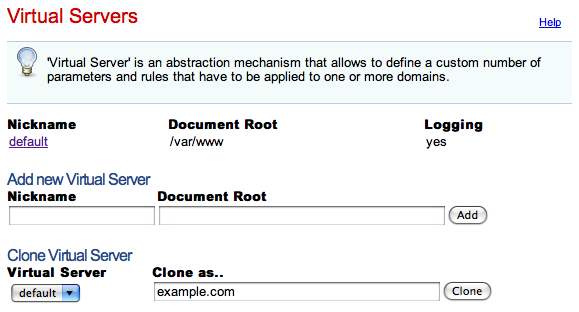

# cherokee-admin Cherokee Web Server 0.9.0 (Sep 16 2008): Listening on port 9090, TLS disabled, IPv6 disabled, using epoll, 1024 fds system limit, max. 505 connections, single thread
This section briefly describes the whole administration web interface provided by cherokee-admin. This is the only recommended way of configuring Cherokee. If you are looking for development information, you should refer to the appropriate section, especially cherokee.conf file specification.
We will first show a quick overview of the available options, followed by a simple walkthrough. You can learn more about the options in their specific documentation entries.
Overview
-
Status: This gives a quick view of the server status.
-
General: There are a number of entries that specify the most significant configuration options such as the port - or ports - that the server will listen to, the default timeout, whether to support keep-alive connections and so on.
-
Virtual servers: If you want your web server to work with more than one domain you will have to create Virtual servers other than the default one. Each one will have a completely independent configuration: paths, behavior, logging facilities, etc.
-
Info Sources: Define the resources that will be providing information. For instance, PHP.
-
Icons: Associate icon images with one or more file extensions. Used to offer directory listings.
-
Mime Types: Manage MIME types.
-
Advanced: This is to configure the most complex parameters of the server and how it interacts with the operating system. If you are unsure about any of the options here, better not mingle with them. Default values should work just fine.
Walkthrough
There is very little set up you must do to have a perfectly functional web server out of the box. Cherokee's default configuration can be used to serve any typical PHP-driven dynamic website.
If you have a specific need, you should check out the recipes present in the Cookbook section of the documentation. Among other subjects, you can find information about Cherokee optimizations, setting up efficient Authentication mechanisms, or configuring several popular application frameworks.
In this tutorial we will be setting up a system with a couple of virtual servers, PHP support, some redirection rules and a simple authentication mechanism.
To follow this walkthrough you need to be running cherokee-admin. This is an administration tool, so you will need system administrator rights.
Now you can access the administration interface simply by opening your web browser and visiting http://localhost:9090
If your user doesn't have enough privileges you will be notified. Also if no configuration file exists you will be prompted to create one with the default settings.
That is a good starting point. Right now your web server will not be running yet. We will only be using two of the available tabs to adjust some more settings: General and Virtual Servers.
This is an example of what you'll be seeing:
Of course, once we're done we will have to apply our changes and launch the server. The configuration changes must be submitted to the server, be it automatically if possible or by using the appropriate form submitting buttons. But no change is reflected in the configuration file until you Apply the changes. You can be sure of not damaging anything while playing around with cherokee-admin. At least not until you Apply the changes. Note that, if the Cherokee server is running, the applied modifications will also affect the instance being executed.
This is what the General tab looks like:

We will only be modifying the Server Permissions. It usually is a poor choice to run services with super user privileges. Set both User and Group to www-data. Your system might already have another user account specifically for the purpose of running a webserver. Use that instead if so, or create the www-data user if you don't already have one.
Next is the Virtual Servers tab:

When you start, you will only have one virtual server called default. You can begin by cloning it as example. While you are at it you should also append the following line to your /etc/hosts file (in Windows you will find this as %WINDIR%\system32\drivers\etc\hosts).
127.0.0.1 example.net example.org
This is to allow your system to resolve requests for example.net or example.org locally. Of course, once you are out in the Wild (you know, in the Internet), you will need proper DNS records.
- default
-
We will leave default untouched except for the document root path, which we will change. This is done through the Basics tab. You could create by hand /var/www/default for example and set it up in the appropriate field.
If you access your machine by IP or a DNS resolution points in that direction for any particular domain, the contents of your document root directory will be exposed (/var/www by default unless you changed that during the build process). Whenever there is no match for a virtual server specifically defined in your list, the default virtual server will be the one responding.
Right now any file with the php extension will be served after being processed by the PHP interpreter (you should have php-cgi installed in your system for this, though).
Any requested file would be sent. If a directory is requested, a file called index.php or index.html will be served if it is present (the search will be performed in that order; you can configure this in the Basics tab). If not, a directory listing is offered instead. If you would want to prevent this behavior but would like to keep up serving whatever content is requested directly, simply change the List & Send handler for the Static Content handler.
- example
-
For now this virtual server is an exact copy of the untouched default virtual server. Create some new directories /var/wwww/example and /var/wwww/example/auth, and configure the first one as default document root path.
Next, setup example.net and example.com in the Domain names tab. We'll erase everything in the Targets list within the Behavior tab, except the default rule. With this we'll only be able to serve static content.
Accessing the URL http://example.org should now show a list of available files and directories under /var/www/example/.
Now lets password protect the auth directory. Add a new Directory class rule pointing to /auth. Then, through the Security tab, add a Validation Mechanism under Authentication.
The field Realm is mandatory. Lets set it as Secured Area. If you choose PAM and impose no more restrictions, only users with a local account in your system will be able to access the secured zone at http://example.net/auth Other mechanisms would work in a similar fashion but with their specific requirements. For example, had you chosen Plain text file instead of PAM you would have had to specify a Password File. For example, it could have been /var/www/passwords.txt with the following contents:
testuser1:password1 testuser2:password2
Note that the rule must not be flagged as Final, or else no other rules will be applied afterwards and no access will be given to any contents. This is because at this point we have not defined any handler for the /auth rule and nothing would be served.
Refer to the Cookbook for detailed examples on the different options.
Lastly, lets configure a redirection rule by choosing a "Regular Expression" as the new rule type. Type the following regex: ^/rss.*$ Then, within the Handler selection tab specify a target: /feed
And voilà! A request of the form http://example.net/rss2 would be redirected to http://example.net/feed
Note that the Type of the Redirection is External. This means the server will instruct the requesting web client to fetch the redirected URL, which means the client will always know what the final URL is. This also means the redirection can be done to servers other than your own. If it were internal, the redirection would be invisible (not showing the target URL), but it would be limited to the same virtual server.
A much more general redirection could be one using these values:
- Regular Expression
-
^/(.*)$
- Substitution
Note that this rule would have to be external since example.com is not among the domains managed by our configuration.
This would redirect every petition to a site hosted under http://example.com/example.net. For instance, the request for http://example.net/image.jpg would return http://example.com/example.net/image.jpg.
If you need more details, Check out the documentation for the redirection handler.